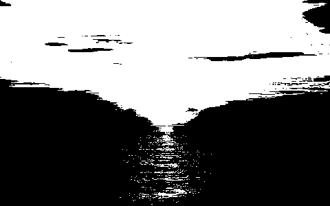
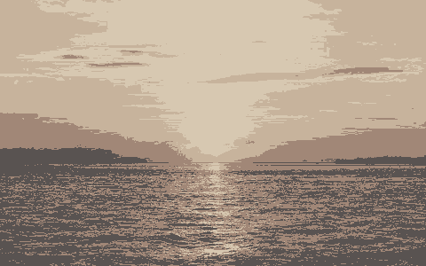
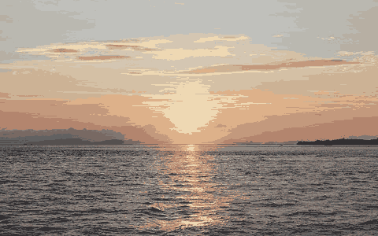
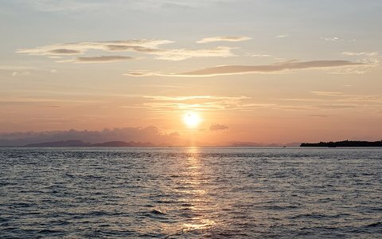
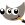
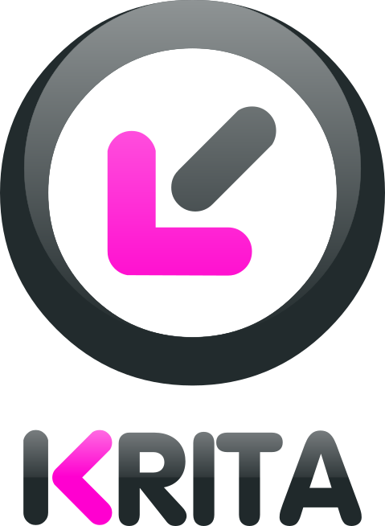
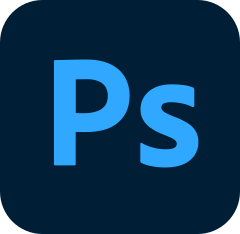
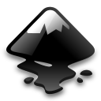
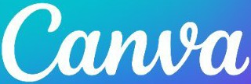

Збільш і подивись зблизька
Графічне зображення — це будь-яка картинка: фото, малюнок, схема, іконка. Комп'ютер зберігає зображення двома способами:
- растрове — картинка складається з крихітних кольорових квадратиків-пікселів;
- векторне — картинка складається з фігур: ліній, кіл, кривих.
Ось той самий смайлик, збережений двома способами. Посунь повзунок праворуч до кінця.
Растр чудово передає фото з мільйонами відтінків, але під час збільшення розсипається на квадратики. Вектор лишається чітким за будь-якого розміру, але не годиться для фото.
Яким способом краще зберегти кожне зображення?
Розшифруй пікселі
Кодування графічних даних — запис зображення числами.
Растр — це сітка пікселів, і колір кожного записують числом: 1 — чорний, 0 — білий.
Розшифруй останні чотири рядки за кодом.
1 — чорний піксель
0 — білий піксель
Клацай клітинки, де в коді стоїть 1.
У кольоровій картинці колір пікселя записують трьома числами від 0 до 255 — скільки в ньому червоного, зеленого й синього світла. Це модель RGB.
Клацни будь-який піксель і посувай повзунки.
під лупою
бачить око
Який колір дає кожен код?
Розділення — кількість пікселів у ширину й у висоту, наприклад 1920×1080.
Те саме фото з різним розділенням:
Що більше бітів відводять на піксель, то більше кольорів можна записати:




Малюємо фігурами
Під час векторного кодування записують не пікселі, а фігури. Для кожної фігури зберігають її вид, координати, розмір і колір.
Координати — як у шкільній системі, але точка (0, 0) у лівому верхньому куті, а y росте донизу. Розмір полотна — 100×100.
Обери фігуру й колір і проведи мишею по полотну — праворуч з'явиться її запис. Готову фігуру можна перетягнути.
Знайомся: графічні формати
Формат файлу видно з розширення — частини назви після крапки: kit.jpg, logo.svg. Кожен формат має своє призначення.
Клацни кожну картку, щоб її перевернути.
Збережи як…
Тепер обери формат для кожної ситуації. Пригадай, що вміє кожен.
Чим створювати візуальний контент
Візуальний контент — картинки, постери, іконки, інфографіка, які ми створюємо й публікуємо. Для різних завдань є різні програми:

GIMP
Krita
Photoshop
Inkscape FigmaIllustrator
FigmaIllustrator
Яким засобом найкраще виконати кожне завдання? Клацни завдання, а потім засіб.
Генерування зображень
Генерування зображень — створення нових картинок програмою зі штучним інтелектом. Нейромережа вчилася на мільйонах картинок із підписами, тому «знає», який вигляд мають предмети й стилі.
DesignerAdobe Firefly
Як ШІ малює картинку
Промт — текстовий опис того, що треба намалювати.
Генератор починає з випадкового «шуму». На кожному кроці нейромережа трохи прибирає шум так, щоб картинка ставала схожою на промт.
Склади промт
Хороший промт називає героя, місце, стиль і деталі. Багато генераторів краще розуміють англійську, тож промт часто перекладають.
Поекспериментуй: клацай слова чи перетягуй їх на промт, а тоді натисни «Згенерувати».
Англійською:
Як розпізнати згенероване
Згенеровані «фото» часто виглядають правдоподібно, але ШІ не розуміє світу — він лише повторює те, що бачив. Тому видають його такі деталі:
- дивні руки: зайві чи злиплі пальці;
- написи-абракадабра на вивісках і плакатах;
- зайві чи зниклі частини тіла в людей і тварин;
- світло й тіні, що падають у різні боки.
Це «фото» згенерував ШІ. Знайди на ньому чотири помилки — клацни на них. Обережно: не кожна деталь підозріла.
Чесно чи нечесно?
ШІ — лише інструмент. За картинку відповідає той, хто її створив і поширив. Правила чесного використання:
- позначай згенероване: «Зображення створено ШІ»;
- не видавай згенероване за власний малюнок;
- не створюй зображень реальних людей без їхньої згоди — і ніколи для того, щоб висміяти;
- не створюй і не поширюй фейки, які лякають чи вводять в оману;
- не завантажуй у генератор чужі фото й особисті дані;
- перевір, чи дозволяє ШІ вчитель або правила конкурсу.
Оціни, чи чесно вчинив кожен.